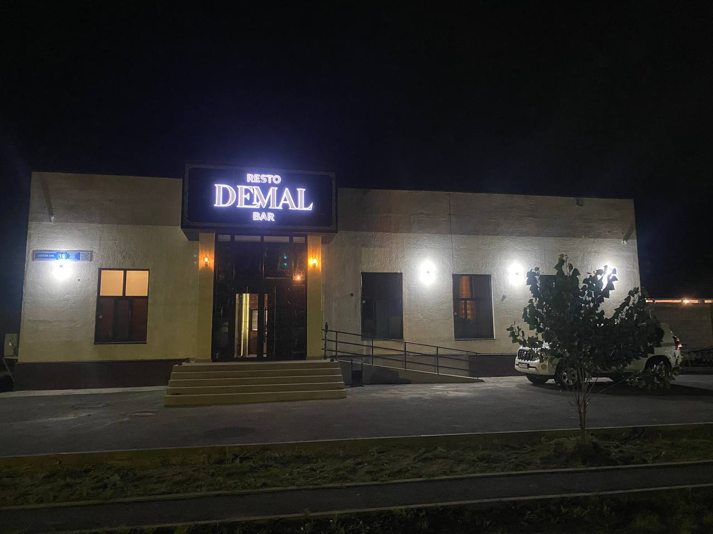
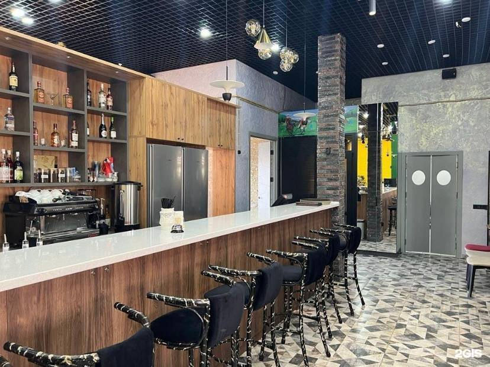
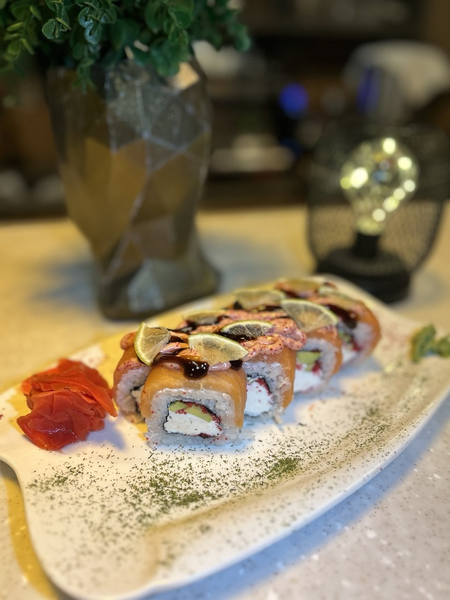

Ресторан Demal в Астане
О ресторане
Demal — ресторан в Астане. Здесь посетители могут ознакомиться с меню, выбрать блюда и узнать актуальные цены. На этом сайте представлена информация о ресторане, фотографии заведения, меню и контактные данные. Посетители также могут посмотреть график работы и ознакомиться с формой заявки на бронирование столика. Сайт создан для того, чтобы упростить поиск основной информации о Demal и помочь гостям подготовиться к посещению ресторана.
Фотографии ресторана



Отзыв посетителя
«Мне понравилась атмосфера ресторана и качество блюд.»
— Али, 5 октября 2026 года